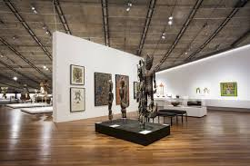

Explore

Mission Statement
The Explore page allows users to browse through the museum's collection and exhibitions. It features a search bar for easy navigation and filters to help users find specific types of art or exhibitions. The page is designed to be visually appealing and user-friendly, with clear categories and high-quality images of the artworks.
Who we serve
- Art enthusiasts looking to explore the museum's collection and exhibitions.
- Visitors planning their trip to the museum and wanting to see what exhibitions are currently on display.
- Students and researchers interested in learning more about the museum's collection and exhibitions.
Milestones
- 2024: Conducted user research to understand the needs and preferences of our target audience.
- 2025: Developed wireframes and prototypes for the Explore page.
- 2026: Implemented the Explore page with a focus on usability and visual appeal.
- 2026: Conducted user testing to gather feedback and make improvements to the Explore page.